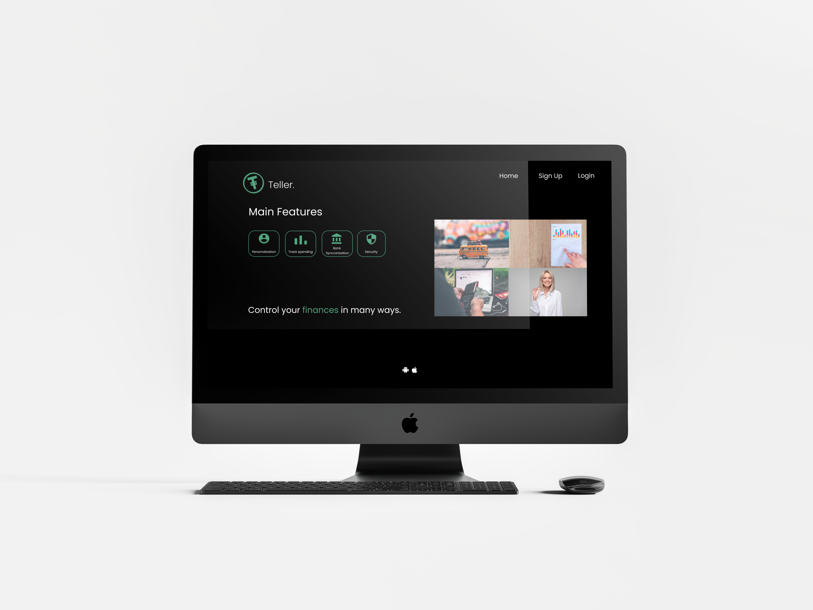

Projects
The SI @ RIT App

A fully-fleshed prototyping project, showing the process from ideation to usability testing of lo-fi and hi-fi prototypes.
Car Dashboard UI

Design sprint of a reimagined car dashboard interface, with survey data utilized for design decisions.
Teller app
App prototype involving contextual inquiry and development of personas in the process.
Design Sprints

A smaller collection of sketches, designs, and ideation.
About
 I'm a 5th-year Human-Centered Computing student at Rochester Institute of Technology, graduating in May 2020 and currently searching for full-time opportunities.
I'm a 5th-year Human-Centered Computing student at Rochester Institute of Technology, graduating in May 2020 and currently searching for full-time opportunities.
My drive for UX was borne from a young age, as growing up I observed relatives and friends struggle to use technology or experience frustrating roadblocks. My goal has always been to make technology friendly and easy to use for everyone, taking every user into consideration.
Outside of UX design and development, I love to experience as many forms of art as I can. I create my own calligraphy and always find myself engrossed in books or in games with rich stories. I believe that sharing in artistic expressions of the human experience is vital to understanding and empathizing with users of every demographic, and creating a truly personalized user experience.
To get in touch, you can find me on LinkedIn or contact me by email.
- Sierra